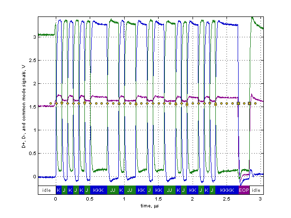
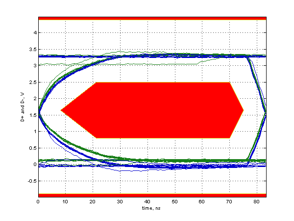

Full Speed Signal Quality Test
Results for full_speed_host0_port0
For details on test setup, methodology, and performance criteria, please consult the signal quality test description at the USB-IF Compliance Program web page.
Required Tests
- Overall result: pass!
- Signal eye:
eye passes
- EOP width: 165.60 ns
EOP width passes
- Measured signaling rate: 12.0024 MHz
signal rate passes
- Crossover voltage range: 1.54 V to 1.58 V, mean crossover 1.56 V
(first crossover at 1.57 V, 20 other differential crossovers checked)
crossover voltages pass
- Consecutive jitter range: -407.303 ps to 470.509 ps, RMS jitter 321.321 ps
Paired JK jitter range: -309.287 ps to 163.503 ps, RMS jitter 152.883 ps
Paired KJ jitter range: -165.348 ps to 120.576 ps, RMS jitter 96.856 ps
jitter passes
Additional Information
- Rising Edge Rate: 171.26 V/us (Equivalent risetime = 15.42 ns)
(minimum 132.00 V/us, maximum 660.00 V/us)
- Falling Edge Rate: 158.18 V/us (Equivalent risetime = 16.69 ns)
(minimum 132.00 V/us, maximum 660.00 V/us)
- Edge Rate Match: 8.26% (limit +/-10%)
Signal Data and Eye


Tracking Information
- Analysis call: usbsigcheck('D:\A9125MP B\USB\Full speed\full_speed_host0_port0.tsv', 'fsfe', 6)
- Testing script version: 2.22.03